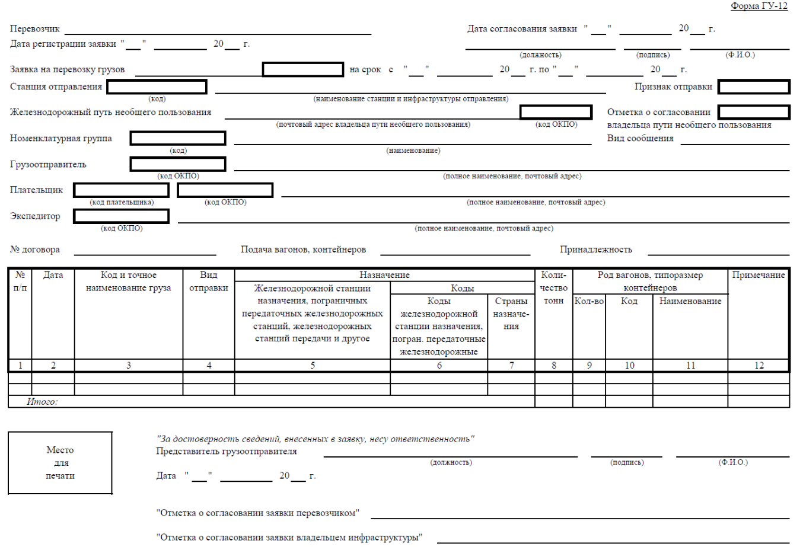

Consignment Request (Form GU-12)
The GU-12 consignment request is the document on the basis of which cargo is carried by rail: carriage is performed only on the basis of a request accepted for execution (agreed) by the carrier. The procedure for accepting requests is established by the Rules for the Acceptance of Consignment Requests for Rail Freight Carriage (approved by Order of the Russian Ministry of Transport No. 228 of 27.07.2015) in accordance with Article 11 of Federal Law No. 18-FZ of 10.01.2003 "Charter of Railway Transport of the Russian Federation". The Rules establish the request form, the rules and procedure for its completion and submission to the carrier, and the procedure for consideration of requests by the carrier and the infrastructure owner.

General provisions
The GU-12 form is identical for all participants in rail carriage.
Consignors and cargo-transshipment organisations submit a separate request:
- for each railway departure station;
- for each cargo nomenclature group;
- by consignment type (wagon-load, group, block-train consignments; in containers; small consignments);
- by the ownership of wagons and containers;
- by type of traffic (direct rail traffic, direct and indirect mixed traffic, direct and indirect international traffic — via border transfer stations, indirect international traffic — via Russian ports).
Special features of requests by type of carriage
| Type of request | Special feature |
|---|---|
| Direct/indirect international traffic via border crossings | separately for each outbound border transfer station of the RF |
| Containers and empty containers | separately for each container size |
| Carriage in wagons | indicating the number of wagons and tonnes |
| Direct/indirect international traffic via ports | separately for each port and liquid-cargo transshipment point |
| Containers | indicating the number of containers |
| Small consignments | indicating the number of tonnes |
| Cargo on its own wheels | the number of cargo units and their mass in tonnes |
| Empty freight wagons | a request is not submitted |
Additional requests are submitted:
- for carriage as part of a train formation not owned by the carrier — a request for carriage in such a formation (under the Rules approved by Order of the Russian Ministry of Transport No. 150 of 22.10.2007);
- for carriage by consignor block trains — a request for carriage by consignor block trains;
- when agreeing requests for carriage in special well wagons (transporters) — an additional request is sent to the CFTO (freight transportation service centre).
Deadlines for submitting the request
The request specifies its validity period — no more than 45 calendar days, corresponding to the loading period. The date of submission is the date of its registration with the carrier; the carrier enters the registration number in the "Request number" field.
Deadlines for submitting the request before the carriage begins:
| Traffic | Submission deadline |
|---|---|
| Direct rail traffic | no less than 10 days in advance |
| Direct and indirect mixed traffic | no less than 10 days in advance |
| Direct/indirect international traffic, where the destinations are ports | no less than 15 days in advance |
| Cargo for the elimination of emergency consequences | as such cargo is presented for carriage |
At the request of consignors, in the case of urgent carriage, carriers may, in agreement with infrastructure owners, set shorter submission deadlines.
Procedure for submitting the request to the carrier
The form of submission (paper or electronic) is provided for by the agreement between the carrier and the consignor.
- Paper form — in three copies (to the carrier, to the infrastructure owner, with subsequent return to the consignor), each signed and certified by a seal (where a seal is available).
- Electronic form — by electronic exchange of documents signed with the enhanced electronic signature of the consignor (transshipment organisation), or by exchange of electronic data with the subsequent submission of three paper copies of the agreed electronic request.
Where cargo is dispatched from a non-public track not owned by the consignor, the entry "Agreed" is made in the line "Endorsement of agreement of the non-public track owner", certified by the seal of the track owner (where available) or by an electronic signature (in electronic exchange).
Requests are completed by typewritten (including computer) means, without misprints. The consignor ensures the correctness and accuracy of the particulars. Requests completed in breach of the Rules are returned by the carrier without consideration within one day.
The deadlines for submitting electronic requests, and the procedure and deadlines for their consideration, are the same as for paper requests.
Completion of the request fields
| Field | Content |
|---|---|
| "Carrier" | the carrier's name and its OKPO code |
| "Valid from ___ to ___" | the validity period of the request (start and end dates) |
| "Consignment type" | VO — wagon-load, KO — containers, MO — small consignment |
| "Departure station" | code, full name of the departure station and infrastructure |
| "Non-public track" | name of the non-public track owner, postal address, OKPO code; in the "Endorsement of agreement of the non-public track owner" field — the endorsement of agreement |
| "Nomenclature group" | cargo code and name of the nomenclature group |
| "Type of traffic" | name of the type of traffic |
| "Consignor" | full name, postal address and OKPO code (for RF residents) |
| "Payer" | code, full name, postal address and OKPO code of the payer within the RF |
| "Freight forwarder" | names, addresses and OKPO codes of organisations performing freight forwarding in transit through foreign states, and the name of the transit railway |
| "Carriage organisation agreement No." | number of the agreement with the carrier on the organisation of freight carriage |
| "Supply of wagons, containers" | daily, on working days, on even dates, on odd dates |
| "Ownership" | wagon/container ownership code: "P" — carrier's, "S" — own, "A" — leased |
Completion of the request columns
| Column | Content |
|---|---|
| 1. "Item No." | sequence number of the planned carriage |
| 2. "Date" | loading date (where no line on the supply of wagons/containers is completed) |
| 3. "Cargo code and exact name" | cargo code and exact name according to the tariff manual |
| 4. "Type of consignment" | VO — wagon-load, MO — block-train, GO — group |
| 5. "Names of the railway station, infrastructure, destination country, transfer station, consignee and other" | water-transport transfer station, consignee at the port and transshipment organisation (for carriage via ports/mixed traffic), destination station, etc. |
| 6. "Codes of the destination station, border transfer stations, transfer stations and other" | station codes depending on column 5; for a transshipment organisation — the OKPO code (for RF residents) |
| 7. "Destination country code" | destination country code for direct and indirect international traffic |
| 8. "Number of tonnes" | gross mass in tonnes: wagon-load/container — to 1 t, small consignment — to 0.01 t |
| 9. "Quantity" | number of wagons or containers |
| 10. "Code" | wagon type code; for a container — the length in feet in the numerator, the gross mass in the denominator |
| 11. "Name" | abbreviated name of the wagon type and the ISO container type |
| 12. "Remarks" | special carriage conditions, a train formation not owned by the carrier, the wagon owner (with quantities per owner), traction marks VO-INE / VO-INT / VO-INE/T / VO-INT/E, other particulars |
Where cargo of different exact names, or cargo of the same exact name by different consignment types, is declared for one date, the particulars are entered in separate lines. Where carriage is performed as part of a train formation not owned by the carrier, the exact name of the cargo is supplemented with the words "by a train formation not owned by the carrier".
The "Total" line
The "Total" line indicates:
- in column 8 — the total number of tonnes under the request (for carriage in wagons and by small consignments);
- in column 9 — the total number of wagons and containers, in separate total lines broken down by type.